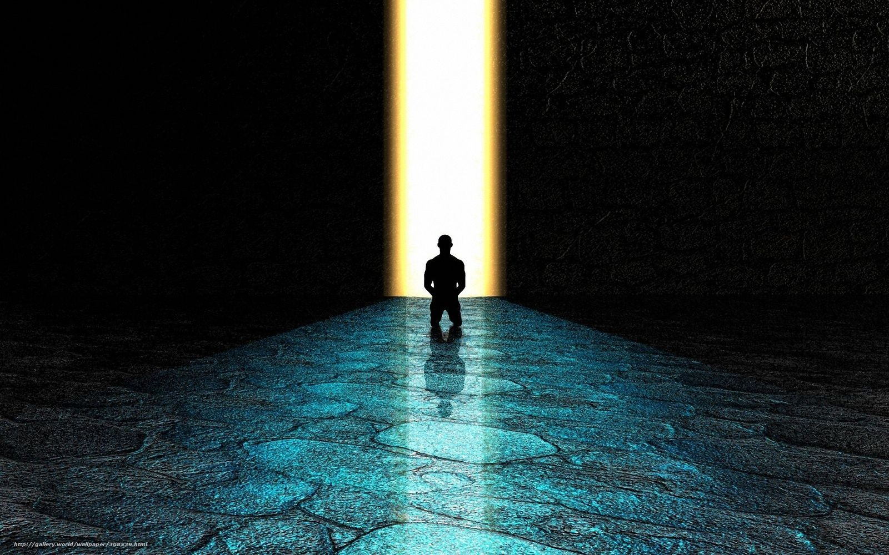
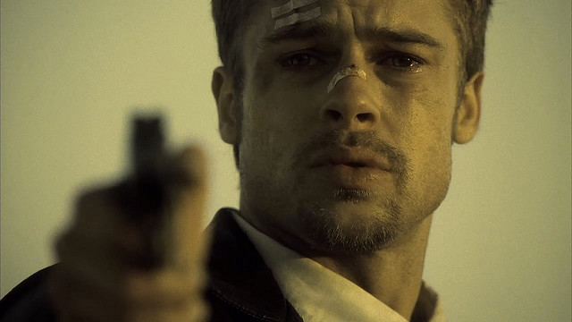
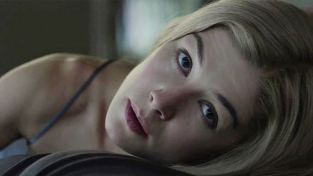

Você sabia que alguns papéis de filmes de sucesso foram oferecidos antes a
outros
atores? Erros de roteiro, acidentes nas gravações, peculiaridades nas preparações dos atores, objetos comuns
que eram proibidos na época e foram às telas pela primeira vez...
A seguir vamos navegar por algumas curiosidades de filmes de suspense!

Erro no roteiro evitado por acaso: O final icônico do filme, em que a cabeça de uma personagem aparece em
uma caixa, quase foi alterado. Os produtores queriam mudar o desfecho, mas acidentalmente enviaram o roteiro
original ao diretor David Fincher. Fincher gostou tanto do final original que lutou para mantê-lo, e isso
garantiu a cena chocante que conhecemos hoje.
Acidente de Brad Pitt durante as gravações: Durante uma intensa cena de
perseguição, Brad Pitt sofreu um acidente ao cair e cortar gravemente o braço ao atravessar uma janela de vidro.
A lesão foi incorporada à trama, e seu personagem passou a usar uma tala pelo restante do filme, algo que não
estava previsto no roteiro inicial.

A transformação física exaustiva de Rosamund Pike: Para retratar diferentes momentos da
vida de sua personagem, Rosamund Pike teve que ganhar e perder cerca de 10 quilos repetidamente ao longo das
gravações. Esse processo de constante transformação física foi extenuante, mas garantiu a fidelidade à
narrativa e à evolução do personagem.
O diário verdadeiro de Amy: Para se aprofundar ainda mais em sua personagem, Rosamund Pike
decidiu escrever à mão um diário pessoal durante a produção, criando sua própria versão do diário que
aparece no filme. Ela incorporou pensamentos e mentiras da personagem Amy, mergulhando completamente na
complexidade psicológica de sua interpretação.

Alfred Hitchcock, um dos diretores mais renomados da história do cinema, nunca ganhou um
Oscar competitivo, apesar de ter sido indicado cinco vezes na categoria de Melhor Diretor por filmes
icônicos como Rebecca (1940), Lifeboat (1944), Spellbound (1945), Rear Window (1954) e Psycho (1960).
Em 1967, ele recebeu um Oscar honorário, conhecido como o Prêmio Memorial Irving G.
Thalberg, em reconhecimento por suas inestimáveis contribuições ao cinema.
Um aspecto curioso relacionado a Psycho é que o filme quebrou tabus ao mostrar uma
descarga
de vaso sanitário, algo que era considerado inapropriado na época. Essa cena foi inovadora e ajudou a
estabelecer um novo padrão para a representação de temas mais sombrios e realistas no cinema.